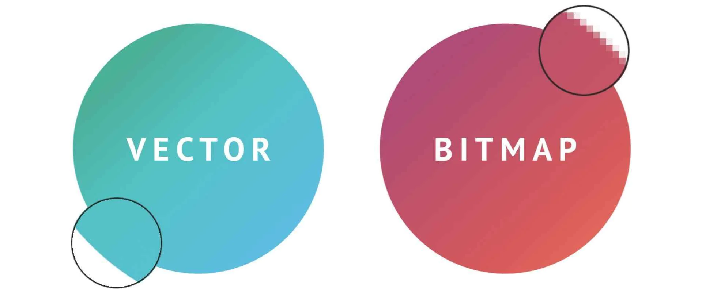

Vectorafbeeldingen worden gemaakt met behulp van wiskundige formules om vormen te definiëren. In tegenstelling tot bitmapafbeeldingen, die zijn samengesteld uit een raster van pixels, gebruiken vectorafbeeldingen punten, lijnen en curven. Hier zijn enkele belangrijke kenmerken:
Schaalbaarheid: Vectorafbeeldingen zijn perfect schaalbaar zonder verlies van kwaliteit. Ze behouden hun scherpte en helderheid, ongeacht de grootte waarop ze worden weergegeven.
Resolutie-onafhankelijkheid: Omdat vectorafbeeldingen geen pixels gebruiken, zien ze er op elk scherm hetzelfde uit, ongeacht de resolutie. Dit maakt ze ideaal voor grafische elementen die op verschillende apparaten en schermformaten moeten worden weergegeven.
Bestandsgrootte: Vectorbestanden hebben over het algemeen kleinere bestandsgroottes in vergelijking met vergelijkbare bitmapbestanden. Dit komt doordat vectorgegevens alleen de wiskundige formules bevatten en niet de informatie voor elke afzonderlijke pixel.
Bewerkbaarheid: Vectorafbeeldingen zijn gemakkelijk bewerkbaar omdat de vormen worden gedefinieerd door formules. Dit maakt het eenvoudig om de grootte, vorm en kleur aan te passen zonder verlies van kwaliteit.
Toepassingen: Vectorafbeeldingen worden vaak gebruikt voor logo's, pictogrammen, illustraties, en andere grafische elementen waarbij schaalbaarheid en bewerkbaarheid van cruciaal belang zijn.
Bitmapafbeeldingen, ook wel rasterafbeeldingen genoemd, bestaan uit een raster of matrix van individuele pixels. Elk pixel heeft een specifieke kleur en samen vormen ze het beeld. Hier zijn enkele belangrijke kenmerken:
Resolutie-afhankelijkheid: Bitmapafbeeldingen zijn afhankelijk van resolutie, wat betekent dat ze er op verschillende schermformaten anders uit kunnen zien. Bij het vergroten van een bitmapafbeelding kunnen de afzonderlijke pixels zichtbaar worden, wat kan leiden tot vervaging of kwaliteitsverlies.
Bestandsgrootte: Bitmapafbeeldingen kunnen grote bestandsgroottes hebben, vooral bij hogere resoluties, vanwege de gedetailleerde pixelinformatie.
Bewerkingscomplexiteit: Het bewerken van bitmapafbeeldingen kan complex zijn, vooral als het gaat om het wijzigen van de schaal, omdat dit invloed heeft op elke individuele pixel.
Toepassingen: Foto's, gedetailleerde illustraties en andere complexe afbeeldingen met veel kleurgradaties worden vaak opgeslagen als bitmapafbeeldingen. Ze zijn geschikt voor toepassingen waarin fotorealisme en detailniveau belangrijk zijn.
Het opslaan van beeldgegevens, zoals afbeeldingen, omvat het kiezen van het juiste bestandsformaat en de juiste compressiemethoden om een balans te vinden tussen bestandsgrootte en kwaliteit. Hier zijn enkele belangrijke overwegingen:
Bestandsformaten: Kies tussen JPEG voor foto's, PNG voor transparantie of eenvoudige illustraties, GIF voor eenvoudige animaties, en SVG voor schaalbare vectorafbeeldingen.
Compressie: Gebruik lossless (PNG) voor behoud van kwaliteit of lossy (JPEG) voor kleinere bestandsgroottes met acceptabel kwaliteitsverlies.
Opslagresolutie: Stem de resolutie af op het beoogde gebruik, met lagere resoluties voor webgebruik en hogere voor afdrukken.
Het opslaan van geluidsgegevens omvat het kiezen van het juiste audioformaat en de juiste compressie-instellingen. Hier zijn enkele belangrijke overwegingen:
Audioformaten: Overweeg MP3 voor gecomprimeerde audio met een goede balans tussen bestandsgrootte en kwaliteit, WAV voor ongecomprimeerde audio, en AAC voor betere compressie en kwaliteit.
Compressie: Kies tussen lossless (WAV) voor volledige kwaliteit of lossy (MP3, AAC) voor kleinere bestandsgroottes met aanvaardbaar kwaliteitsverlies.
Bitsnelheid (Bitrate): Pas de bitsnelheid aan op basis van de gewenste geluidskwaliteit, met hogere bitsnelheden voor betere kwaliteit en grotere bestandsgroottes.